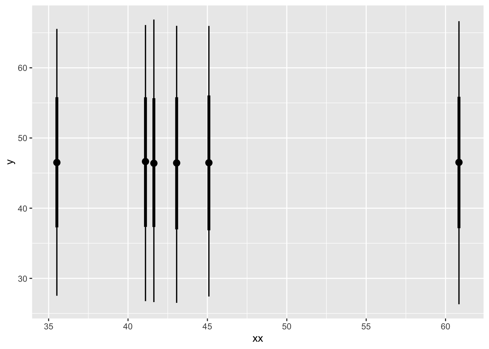
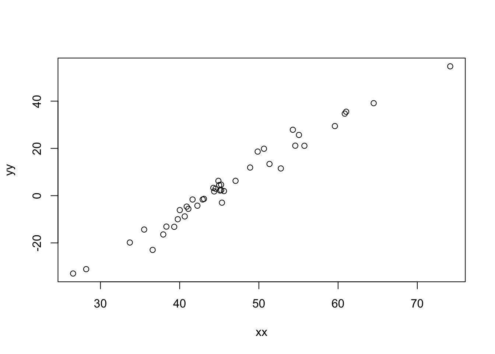
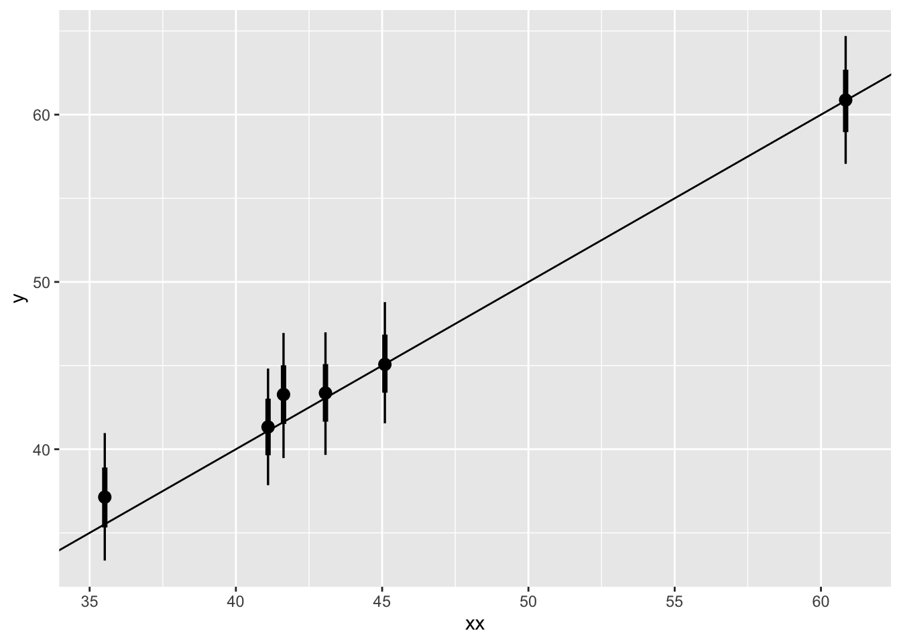
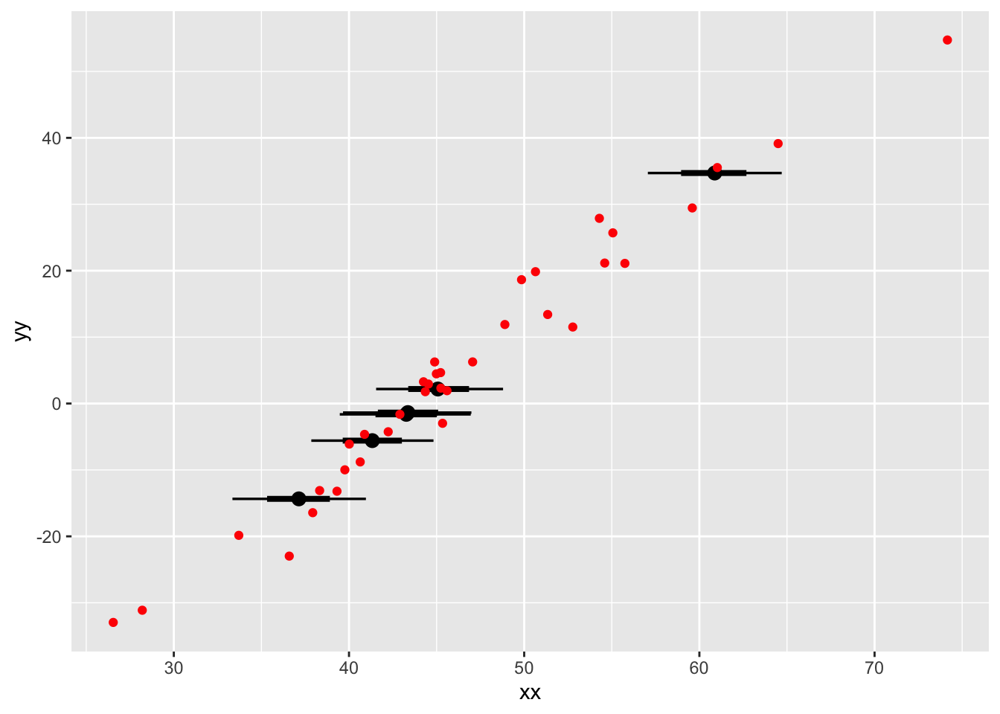

library(ggplot2)
library(tidyverse)
library(tidybayes)
library(cmdstanr)working with missingness
I wish the topic of missingness was introduced much earlier in statistical ecology! Most ecological datasets have some examples of this. Working directly with missing data has many advantages, including letting us use ALL the information we have. There are many arguments, but that’s the one I find most compelling. In our science, each datapoint costs dearly in money and effort – the least we can do is learn the tools to use them well!
Roadmap
- normal distributions with missing data
- nonnormal distributions with missing data
- regression with missing information in just the x
- regression with missing data in both
- nonlinear, nonnormal missing data in both
Normal distributions with missing data
Here is code from Flavio Affinito, adapting the code in the Stan Guide for continuous missing data:
MissingDataImputation2 <- cmdstanr::cmdstan_model(
here::here("posts/2023-08-24-imputation-nonnormal/MissingDataImputation2.stan"))
MissingDataImputation2data {
int<lower=0> N_tot; // Total number of observations
int<lower=0> N_miss; // Number of missing values
int<lower=0> N_obs; // Number of observed values
array[N_obs] int<lower=1, upper=N_tot> ii_obs; // Position of observed values in the column
array [N_miss] int<lower=1, upper=N_tot> ii_mis; // Position of the missing values in the column
vector[N_obs] y_obs; // Observed values
//int<lower=0> N_year; // Number of years in the dataset
}
parameters {
real mu; // Population mean
real<lower=0> sigma; // Common standard deviation
vector[N_miss] y_imputed; // Imputed outcomes for missing data
}
transformed parameters {
vector[N_tot] y; // create the dataset to fit the likelihood
y[ii_obs] = y_obs; // assign observations to the positions with observations
y[ii_mis] = y_imputed; // assign parameters (y missing) to the positions without observations
}
model {
// Priors
mu ~ normal(50, 10);
sigma ~ exponential(.1);
// Likelihood for observed and imputated data
y ~ normal(mu, sigma);
}
generated quantities {
vector[N_tot] y_pred;
for (i in 1:N_tot) {
y_pred[i] = normal_rng(mu, sigma);
}
}Let’s try it out with 42 numbers, of which 6 are missing:
set.seed(1234)
xx<- rnorm(42, mean = 50, sd = 10)
xx2 <- xx
xx2[sample(42, 6, replace = FALSE)] <- NA
hist(xx2)
normal_missing <- MissingDataImputation2$sample(
data = list(
N_tot = 42,
N_miss = 6,
N_obs = 42-6,
ii_obs = which(!is.na(xx2)),
ii_mis = which(is.na(xx2)),
y_obs = xx2[which(!is.na(xx2))]),
parallel_chains = 4,
refresh = 0)Running MCMC with 4 parallel chains...
Chain 1 finished in 0.4 seconds.
Chain 2 finished in 0.4 seconds.
Chain 3 finished in 0.4 seconds.
Chain 4 finished in 0.4 seconds.
All 4 chains finished successfully.
Mean chain execution time: 0.4 seconds.
Total execution time: 0.6 seconds.posterior_and_original <- normal_missing$draws() |>
gather_rvars(y_imputed[i]) |>
mutate(xx = xx[which(is.na(xx2))])
library(tidybayes)
posterior_and_original |>
ggplot(aes(x = xx, ydist = .value)) +
stat_pointinterval()Warning: Using the `size` aesthetic with geom_segment was deprecated in ggplot2 3.4.0.
ℹ Please use the `linewidth` aesthetic instead.
unsurprisingly this is the same distribution for all parameters
with a linear relationship
let’s imagine there is a clear linear relationship but we still have missing values:
yy_bar <- 12 + 2*(xx - 50)
yy <- rnorm(42, yy_bar, sd = 3)
plot(xx, yy)
with the same 6 datapoints missing
regression_imputation <- cmdstanr::cmdstan_model(
here::here("posts/2023-08-24-imputation-nonnormal/regression_imputation.stan"))
regression_imputationdata {
int<lower=0> N_tot; // Total number of observations
int<lower=0> N_miss; // Number of missing values
int<lower=0> N_obs; // Number of observed values
array[N_obs] int<lower=1, upper=N_tot> ii_obs; // Position of observed values in the column
array [N_miss] int<lower=1, upper=N_tot> ii_mis; // Position of the missing values in the column
vector[N_obs] x_obs; // Observed values
vector[N_tot] y;
}
parameters {
real x_mu; // Population mean
real<lower=0> x_sigma; // Common standard deviation
vector[N_miss] x_imputed; // Imputed values for missing data
real slope;
real intercept;
real<lower=0> y_sigma;
}
transformed parameters {
vector[N_tot] x; // create the dataset to fit the likelihood
x[ii_obs] = x_obs; // assign observations to the positions with observations
x[ii_mis] = x_imputed; // assign parameters (y missing) to the positions without observations
}
model {
// Priors
x_mu ~ normal(50, 10);
x_sigma ~ exponential(.1);
intercept ~ normal(10, 4);
y_sigma ~ exponential(.1);
// Likelihood for observed and imputated data (x)
x ~ normal(x_mu, x_sigma);
// LIkelihood for the response variable
// y ~ normal(intercept + slope * (x - 50), y_sigma);
y ~ normal(intercept + slope * (x - x_mu), y_sigma);
}
generated quantities {
vector[N_tot] x_pred;
for (i in 1:N_tot) {
x_pred[i] = normal_rng(x_mu, x_sigma);
}
}regression_missing <- regression_imputation$sample(
data = list(
N_tot = 42,
N_miss = 6,
N_obs = 42 - 6,
ii_obs = which(!is.na(xx2)),
ii_mis = which(is.na(xx2)),
x_obs = xx2[which(!is.na(xx2))],
y = yy
),
parallel_chains = 4,
refresh = 0)Running MCMC with 4 parallel chains...
Chain 1 finished in 0.8 seconds.
Chain 4 finished in 0.7 seconds.
Chain 2 finished in 0.8 seconds.
Chain 3 finished in 0.8 seconds.
All 4 chains finished successfully.
Mean chain execution time: 0.7 seconds.
Total execution time: 0.9 seconds.posterior_and_original <- regression_missing$draws() |>
gather_rvars(x_imputed[i]) |>
mutate(xx = xx[which(is.na(xx2))],
yy = yy[which(is.na(xx2))]
)
posterior_and_original |>
ggplot(aes(x = xx, ydist = .value)) +
stat_pointinterval() +
geom_abline(intercept = 0, slope = 1)
posterior_and_original |>
ggplot(aes(xdist = .value, y = yy)) +
stat_pointinterval() +
geom_point(aes(x = xx, y = yy),
col = "red",
inherit.aes = FALSE,
data = tibble(
xx = xx[which(!is.na(xx2))],
yy = yy[which(!is.na(xx2))]
))

The major takeaway from this model is that once we have created our merged parameter and data vector x, within the transformed parameters block, we can use it just like a vector made entirely of observations. The model structure causes information to “flow both ways” and automatically gives us the posterior distribution that is most consistent with our data and model. From the point of view of the model, there is no difference between a missing observation and any other unknown number, like a standard deviation or average.
I also enjoy that we are modelling an average for the independent \(x\) variable – and then using that parameter to center the vector before modelling! This is useful if you want to set a prior on the intercept for what the average X value should be. Normally it would be tricky to center a variable with missing data (if you don’t know all the values, how can you know their average?) but Bayes makes it effortless.
Count data with missing numbers
To extend this model further, I want to try modelling count data for both an independent and dependent variable.
In this example, there will be missing data an independent variable. However, we’re not going to be able to model the missing counts as counts, because Stan does not allow discrete missing data. Instead we’ll treat the unobserved data as lognormal, and see how wrong we are.